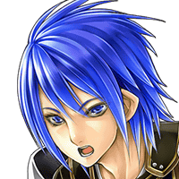

カル
ここが異界パルミナか…。 なんか不思議な場所だな。
カル
ん？ 広いとカルデスを探すのは 苦労しそうだけど？
セリア
狭い場所でカルデスと戦うのは 大変かなーって思っただけよ。
カル
これだけ広ければ、カルデスとの 戦い方も色々考えられそうだな。
カル
クソッ！ やっぱりこの空間は不安定ってことか！
カル
ゆっくりカルデスを探している時間は どうやらなさそうだな…。
カル
カルデスが暴走するより前に ヤツを倒さなけりゃ
カル
この異界ごと俺たちも消されちまう 可能性が高いからな。
カル
強大な力がぶつかり合えば、 そこで戦いが始まったことは分かる。
セリア
あんたは新米なんだから、カルデスを 見つけたら私たちの救援を待つのよ！